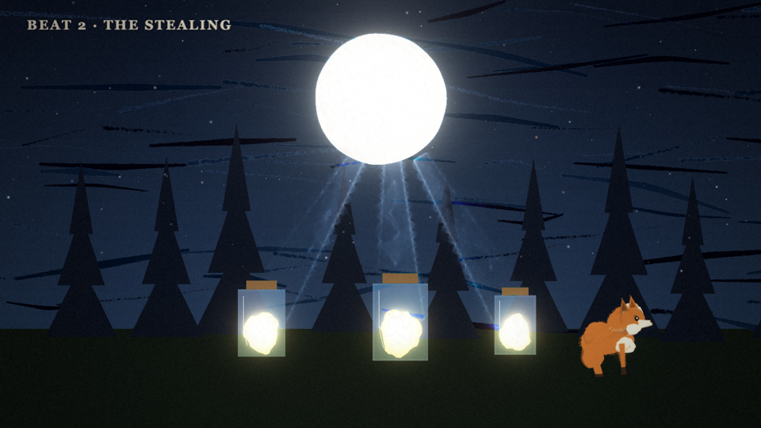
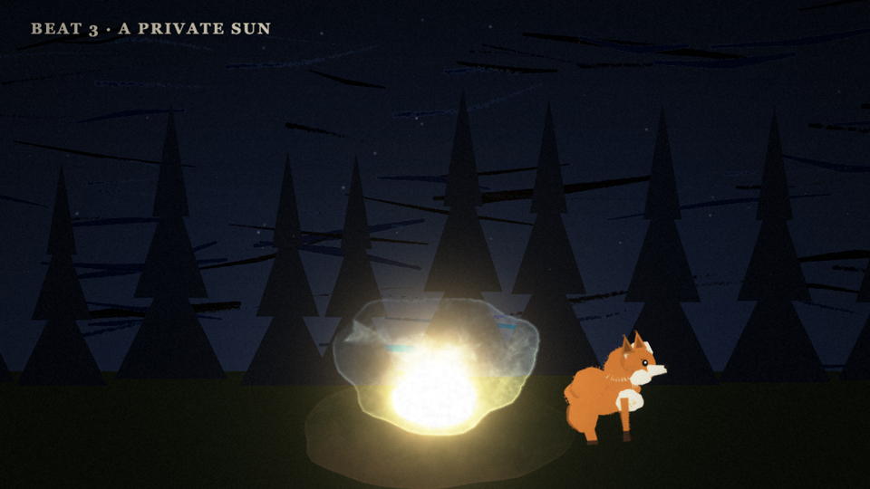
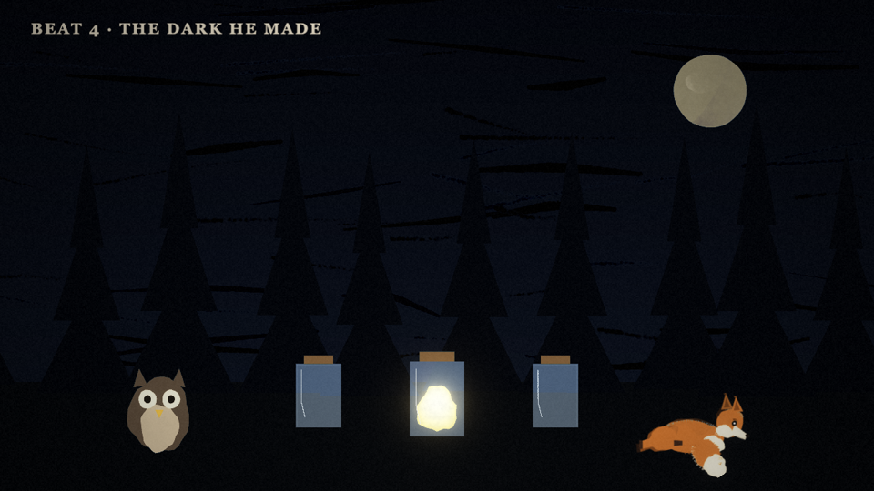
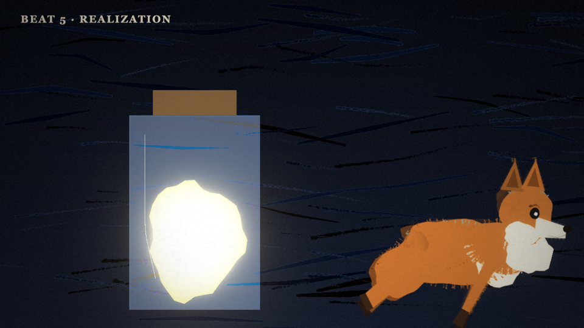
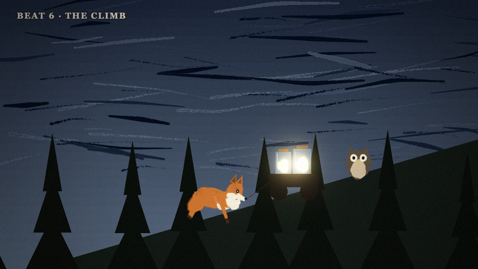
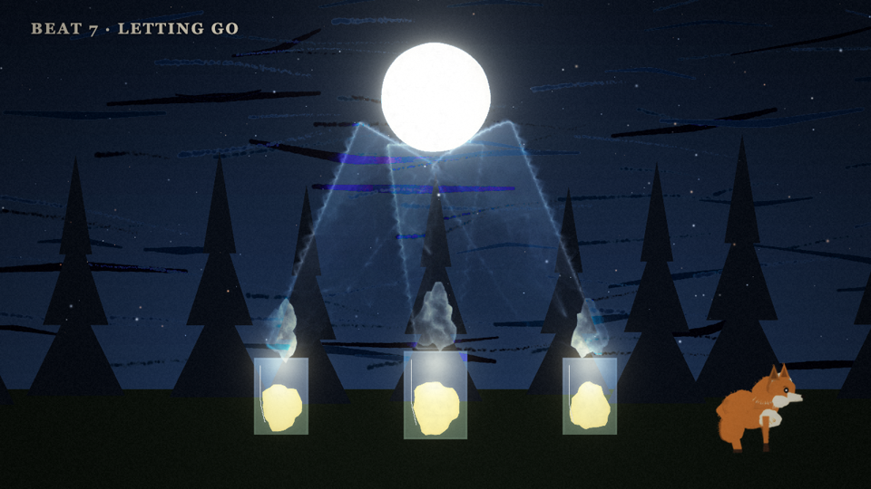
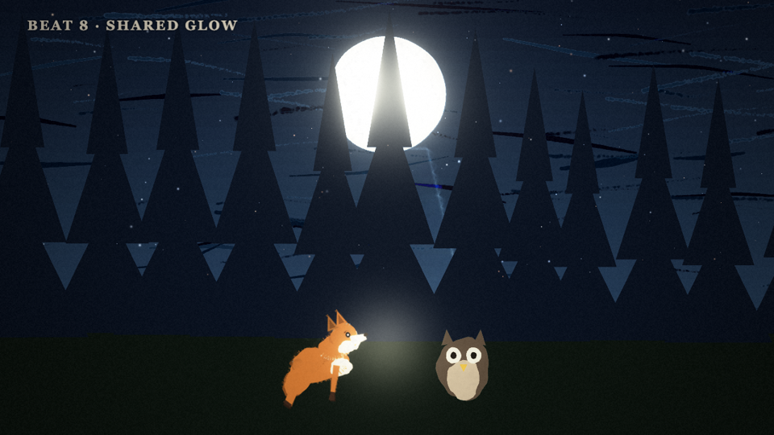

1. Afraid of the dark want
Milo the fox cub cowers in his burrow while the forest sleeps. A single shaft of moonlight reaches him — safe, warm, his.
- Camera
- Slow push-in from wide forest to burrow mouth.
- Sound
- Night crickets, soft lullaby theme on plucked strings.
- Ends on
- Milo staring at the moon: what if I could keep it?

2. The stealing plan in action
Night after night Milo traps moonbeams in jam jars. Playful montage: chasing beams, tripping, corking each glowing jar. It works.
- Camera
- Quick cuts, jars clinking into frame one by one.
- Sound
- Theme turns mischievous; glass clink motif each catch.
- Ends on
- A wagon stacked high with trembling light.

3. A private sun false victory
The burrow blazes like day. Milo parades in his glow — while behind him, over the hill, the forest visibly dims one star at a time.
- Camera
- Split feel: warm close-ups inside, cold widening shot outside.
- Sound
- Lullaby in a major key, slightly too loud; crickets thinning out.
- Ends on
- Owl blinking in sudden dark.

4. The dark he made low point
Owl crashes, fireflies gutter out, the river path vanishes. Milo's own brightest jar flickers — even hoarded light dies alone.
- Camera
- Locked wide shot; darkness creeps in from the edges.
- Sound
- Music drops to a single wavering note; an owl's lost call.
- Ends on
- Milo alone in a ring of dying jars.

5. Realization turn inward
Close on Milo's face in the last flicker. He understands: the jar isn't warm anymore — because there is nobody in the light with him.
- Camera
- Held close-up; reflection of the dying glow in his eyes.
- Sound
- Silence, then the lullaby theme in its simplest form.
- Ends on
- Milo picks up the wagon rope — heading uphill.

6. The climb effort
Milo hauls the wagon to the hilltop, slipping, refusing to leave a single jar. Owl limps alongside and pushes from behind.
- Camera
- Low tracking shot; effortful, paws and wheels.
- Sound
- Heartbeat drum joins the theme; wind rises.
- Ends on
- Silhouette on the ridge against a pale sky.

7. Letting go climax
One by one he uncorks the jars. Beams spiral upward like released birds and pour back into the moon. Stars stutter, then ignite.
- Camera
- Crane up with the rising light; match-cut: jar mouth to moon disc.
- Sound
- Full theme swells; glass pops; a held breath released.
- Ends on
- Moon full and blazing; Milo laughing, lit from above.

8. Shared glow resolution + moral
Moonlight covers everyone. Milo keeps one empty jar — as a lantern he refills each night with Owl, walking others home.
- Camera
- Wide tableau, then slow pull-back to the sleeping forest.
- Sound
- Lullaby resolves; final line of the theme, now a duet.
- Ends on
- Title card: The Moon Thief — light shared is light kept.